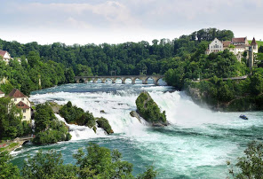
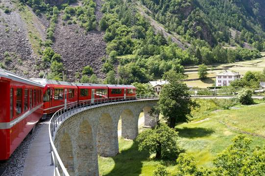
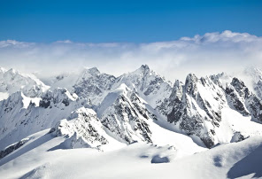

Цікаві місця Швейцарії
Рейнский водопад
Ре́йнский водопа́д — водопад на реке Рейн в швейцарском кантоне Шаффхаузен, рядом с городком Нойхаузен-ам-Райнфалль. Рейнский водопад считается самым большим равнинным водопадом в Европе. Высота водопада — 23 м, ширина — 150 м. Средний расход воды зимой — 250 м³/с, летом — 700 м³/с.
Бернинабан
Бернинская железная дорога однопутная узкоколейная железнодорожная линия, часть Ретийской железной дороги. Соединяет города Санкт-Мориц в кантоне Граубюнден, Швейцария и Тирано, в провинции Сондрио, Италия, через перевал Бернина. Преодолевая высоту 2253 метров над уровнем моря, это самый высокий железнодорожный перевал в Европе и третья по высоте железная дорога в Швейцарии. 7 июля 2008 года, железнодорожные линии Бернина и Альбула, были включены в список памятников Всемирного наследия ЮНЕСКО, под названием Ретийская железная дорога в культурном ландшафте Альбулы и Бернины. Самый знаменитый поезд — Бернина экспресс.
Цюрихское озеро
Цю́рихское о́зеро — озеро, расположенное в Швейцарии, на высоте 409 метров над уровнем моря между кантонами Санкт-Галлен, Швиц и Цюрих; площадь 88 км², наибольшая длина 40 км, ширина от 1 до 4 км, имеет серпообразную форму; на восточном конце принимает в себя реку Линт, вытекающую из западного края озера, в районе города Цюрих под именем реки Лиммат. Объём воды — 3,9 км³. Площадь поверхности — 88,66 км². Площадь водосборного бассейна — 1829 км². Высота над уровнем моря — 406 м. Коса у Гурдена, соединяющаяся железнодорожной дамбой с мысом у Рапперсвиль, делит озеро на две неравные части: меньшую — Верхнее озеро, между кантонами Швиц и Санкт-Галлен, и бо́льшую часть — Нижнее озеро, лежащую в пределах кантона Цюрих. Нижнее — главная часть Цюрихского озера — отличается бо́льшей глубиной, чем Верхнее, неглубокое и поросшее камышом. По обоим берегам проходит железная дорога. На озере два острова: Уфенау и Люцелау. В 1854 году на Цюрихском озере при Мейлене открыты были первые в Швейцарии свайные постройки.
.jpg)
Титлис
Титлис — гора-трёхтысячник в Центральной Швейцарии, горный курорт и популярное место отдыха любителей зимних видов спорта.
Часовенный мост
Капельбрюкке — старинный мост в швейцарском городе Люцерне на реке Ройс. Самый древний деревянный крытый мост в Европе, одна из главных достопримечательностей Швейцарии и символ города Люцерна. Длина моста составляет 204,70 м. Капельбрюкке был построен в 1365 году и тем самым является самым древним деревянным мостом в Европе. Первоначально мост строился в качестве оборонительного коридора в составе городских укреплений и соединял разделённые рекой Ройс старую и новую части города. Под коньком крыши вдоль всего крытого моста размещаются 111 треугольных картин, рассказывающих о наиболее важных моментах истории Швейцарии. У середины моста находится восьмигранная кирпичная башня Вассертурм, построенная ещё до возведения моста, в 1300 году. Башня служила в качестве сторожевой башни, темницы, пыточной и пожарной вышки. В настоящее время в Вассертурме размещается сувенирная лавка и зал гильдии ассоциации артиллеристов. Капельбрюкке сильно пострадал в результате пожара 18 августа 1993 года, вспыхнувшего, как предполагается, от непотушенной сигареты. Большая часть моста была разрушена, погибло 78 из 111 картин. Башня Вассертурм при пожаре не пострадала.
.jpg)